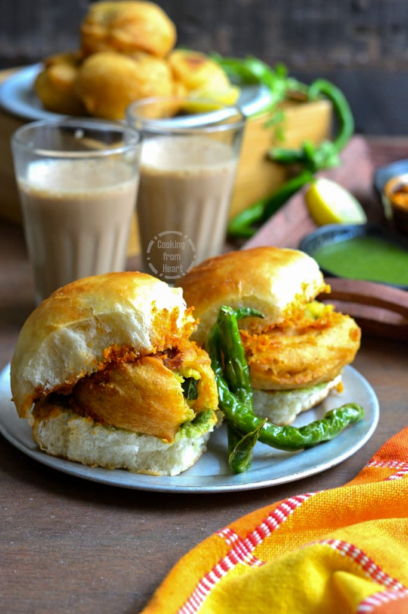

Vadapav

Description
Vada pav is a beloved street food from Maharashtra, India, celebrated for its irresistible combination of flavors and textures. At its heart is a spicy potato fritter (vada) that's coated in a crisp chickpea flour batter, fried to golden perfection. This vada is then nestled within a soft, pillowy pav—a local bread similar to a dinner roll but slightly sweeter and softer. The magic lies in the contrast: the fiery vada, spiced with turmeric, mustard seeds, and green chilies, balances beautifully against the mild sweetness of the pav.
To elevate the experience, vada pav is often served with a medley of chutneys—tangy tamarind and zesty green chutney—adding layers of complexity to each bite. Its popularity stems not just from its affordability and portability but also from its ability to satisfy with every bite, making it a staple in bustling Mumbai streets and beyond. Whether enjoyed as a quick breakfast, a hearty snack, or even a light lunch, vada pav encapsulates the vibrancy and diversity of Indian street food culture in a single, delicious package.
Ingredients
- Potatoes: Boiled and mashed
- Chickpea flour (besan): For the batter
- Green chilies: Finely chopped
- Turmeric powder: For seasoning
- Pav buns: Soft bread rolls
Steps
- Prepare the Potato Filling:Mash boiled potatoes.In a pan, heat oil and add mustard seeds. When they splutter, add finely chopped green chilies, grated ginger, minced garlic, curry leaves, turmeric powder, and asafoetida.
Add the mashed potatoes, salt, and mix well. Let the mixture cool and then form into small balls.
Make the Batter:In a bowl, mix chickpea flour (besan), turmeric powder, red chili powder, salt, and a pinch of baking soda (optional).
Add water gradually to make a smooth, thick batter.
- Fry the Vadas:Heat oil in a deep pan for frying.
Dip the potato balls in the batter, coating them evenly, and deep-fry until golden brown. Drain on paper towels.
- Prepare the Pav:Slice the pav buns in half.
Optionally, toast them lightly with butter on a pan until golden brown.
- Assemble the Vada Pav:Spread green chutney and tamarind chutney on the inner sides of the pav.
Place a hot vada between the buns and press gently.
Serve with additional fried green chilies and dry garlic chutney if desired.
Enjoy your homemade vada pav!